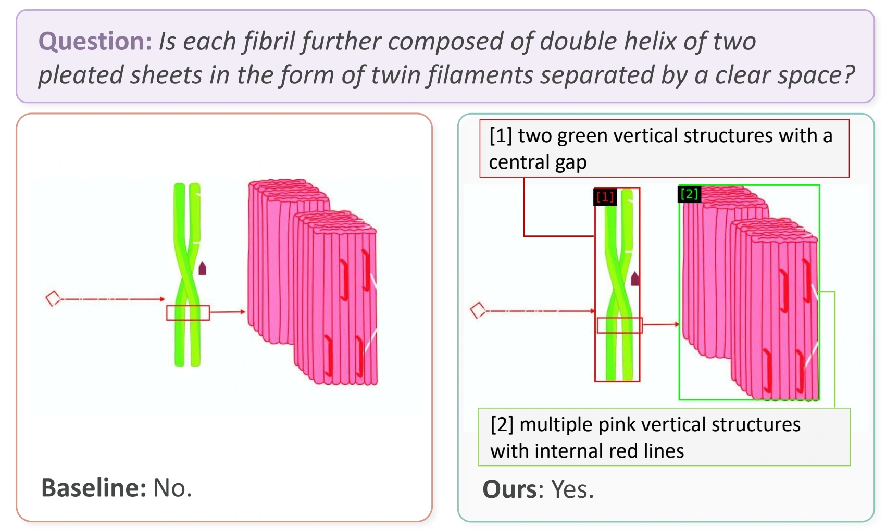
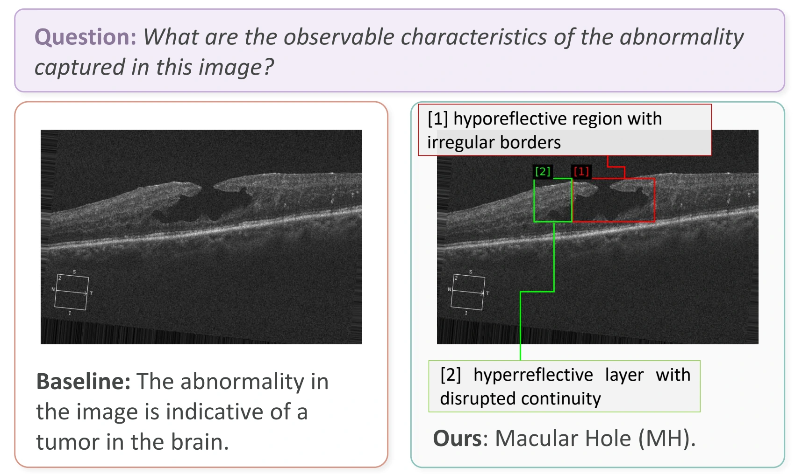
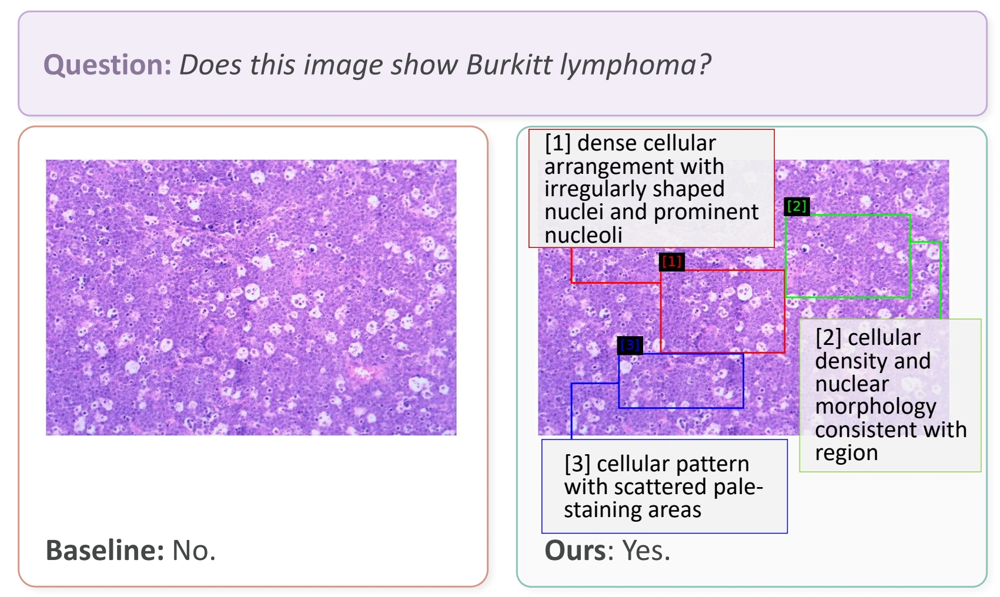

Abstract
Medical vision-language models (VLMs) hold significant promise for clinical image understanding, but scaling them at training time is limited by data privacy constraints and the cost and scarcity of expert annotations. Test-time scaling (TTS) is therefore a practical alternative, as it can improve performance without retraining. However, existing TTS methods are designed mainly for LLMs, where extra inference compute is spent on language-space reasoning. This paradigm does not transfer directly to medical visual reasoning, where generating more text does not yield new visual findings. Instead, progress requires iteratively seeking and integrating fine-grained, localized visual evidence from different image regions. We introduce MedVES, a training-free framework for visual evidence scaling at test time for frozen VLMs in medical VQA. MedVES casts test-time scaling as iterative visual evidence seeking rather than extended language-space reasoning. Its core component is a Visual Overlay State (VOS), a bounded visual state representation that externalizes accumulated evidence on the original image while preserving global context. Built on VOS, MedVES performs iterative visual evidence acquisition with adaptive stopping, enabling test-time compute to scale with question complexity. Across five medical VQA benchmarks covering diverse imaging modalities, a 4B MedVES model achieves strong average performance at its scale and is competitive with, or better than, several models with 8× more parameters, without any additional training.
Experimental results
Under controlled comparisons using the same frozen Qwen3-VL-4B backbone, MedVES improves average accuracy on OmniMedVQA from 72.0% to 80.5% and substantially outperforms representative training-free TTS baselines.
| TTS strategy | Average accuracy (%) | Tokens |
|---|---|---|
| Single-pass | 72.0 | 562 |
| Best-of-N (N = 6) | 75.1 | 3428 |
| Majority Voting (N = 6) | 74.9 | 3462 |
| MCTS (R = 3, D = 1) | 67.4 | 3404 |
| MedVES (ours) | 80.5 | 3107 |
Average accuracy across eight imaging modalities. Token counts are the average number of generated tokens.
| Model | Parameters | PMC-VQA | PathVQA | SLAKE | VQA-RAD | Average |
|---|---|---|---|---|---|---|
| LLaVA-v1.6-34B | 34B | 44.4 | 59.1 | 67.3 | 58.6 | 57.4 |
| Yi-VL-34B | 34B | 39.5 | 47.3 | 58.9 | 53.0 | 49.7 |
| MedGemma | 27B | 37.5 | 63.1 | 62.5 | 71.3 | 58.6 |
| RadFM | 14B | 25.9 | 38.7 | 34.6 | 50.6 | 37.5 |
| LLaVA-v1.6-13B | 13B | 36.6 | 51.9 | 58.9 | 55.8 | 50.8 |
| Med-Flamingo | 8B | 23.3 | 54.7 | 43.5 | 45.4 | 41.7 |
| LLaVA-Med-7B | 7B | 24.7 | 56.8 | 48.6 | 51.4 | 45.4 |
| Qwen3-VL-8B | 8B | 52.0 | 67.5 | 69.5 | 68.5 | 64.4 |
| Qwen-VL-Chat | 7B | 36.6 | 55.1 | 56.0 | 47.0 | 48.9 |
| LLaVA-v1.6-7B | 7B | 35.5 | 47.9 | 57.9 | 52.6 | 48.5 |
| HuatuoGPT-Vision-7B | 7B | 52.7 | 59.9 | 74.5 | 63.8 | 62.7 |
| MedVES (ours) | 4B | 50.9 | 64.4 | 75.7 | 71.7 | 65.7 |
Results transcribed from the camera-ready paper. Average refers to these four benchmarks.
Adaptive evidence budget
Our adaptive strategy outperforms fixed K = 3 while using fewer tokens, coming very close to fixed K = 4 and K = 5 with roughly 35% and 49% fewer tokens, respectively.
| Evidence budget | Accuracy (%) | Tokens |
|---|---|---|
| Fixed K = 1 | 79.2 | 1155 |
| Fixed K = 2 | 79.6 | 2192 |
| Fixed K = 3 | 80.1 | 3440 |
| Fixed K = 4 | 80.6 | 4780 |
| Fixed K = 5 | 80.8 | 6148 |
| Adaptive (ours) | 80.5 | 3107 |
Visual evidence in action
In all cases, the baseline prediction is incorrect, while MedVES progressively accumulates informative local evidence over multiple evidence-seeking steps and reaches the correct answer.



BibTeX
@inproceedings{wu2026medves,
title = {MedVES: Visual Evidence Scaling at Test Time for VLMs in Medical VQA},
author = {Wu, Xiuzhe and Tan, Haoru and Subramanian, Barathi and Chen, Handi
and Peterson, Mitchell Nevin and Guo, Terry and Kiani, Amirhossein
and Noh, Songmi and Qi, Xiaojuan and Shen, Jeanne},
booktitle = {Proceedings of the 34th ACM International Conference on Multimedia},
year = {2026}
}Download BibTeX